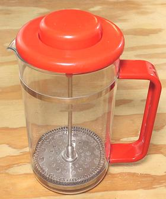

French Press

Many coffee fanatics consider this to be the very best device for brewing
Coffee, but I find it also perfect for making Tea from loose leaves,
especially if you make it very strong to be diluted to taste with hot
boiled water. It is also a convenient method for making
Maté, as the
traditional method requires both an experienced cebador and well trained
guests.
The photo specimen is a 34 ounce (100 cl), the size I consider most
useful, but 12 oz (35 cl) and 51 oz (150 cl) are also available. I bought
the photo specimen more than 25 years ago from Cost Plus (now World Market).
What I paid for it I could not remember, but similar units are available
on-line for US 2022 $16 to $60, in both glass and metal.
kp_frprez 220919 - www.clovegarden.com
©Andrew Grygus - agryg@clovegaden.com
Photos on this
page not otherwise credited are © cg1 -
Linking to and non-commercial use of this page permitted